III. Mise en place d'outils de suivi de performance
Table of Contents
Cette page résume la procédure d’installation du pipeline de lecture, écriture, sauvegarde et visualisation des données internes du hardware. Celle-ci est basée sur le pipeline Telegraf-InfluxDB-Grafana (TIG). Elle s’inspire largement sur le tutoriel accessible en ligne à cette adresse. Cette page présente également la procédure d’interrogation de la base de données InfluxDB après exécution d’un programme python, via l’exécution d’un script bash.
Présentation du pipeline
Le plugin Telegraf, produit par InfluxDB permet la collection des données du hardware de l’ordinateur en temps réel, ainsi que son formatage. Le plugin ZWave-JS UI collecte les données de la prise connectée, et les transfère à Telegraf via un plugin Mosquitto. InfluxDB permet le stockage de ces données en séries temporelles, et constitue la base de donnée qui est interrogée au sein du pipeleine; Grafana est un outil de visualisation et d’analyse des données lues la base de données de InfluxDB.
Téléchargement de TIG
Commençons par télécharger les images docker de trois plugins constituant le pipeline.
1docker pull telegraf
2docker pull influxdb
3docker pull grafana/grafana-oss
Nous allons utiliser la commande docker compose afin de réaliser notre pipeline. Construisons alors le fichier de construction docker-compose.yml. Configurons le port d’entrée de Grafana selon notre choix. Dans cet exemple, nous avons choisi le port 9090.
1version: "3.8"
2services:
3 influxdb:
4 image: influxdb
5 container_name: influxdb
6 restart: always
7 ports:
8 - 8086:8086
9 hostname: influxdb
10 environment:
11 INFLUX_DB: $INFLUX_DB # nom de la base de données créée à l'initialisation d'InfluxDB
12 INFLUXDB_USER: $INFLUXDB_USER # nom de l'utilisateur pour gérer cette base de données
13 INFLUXDB_USER_PASSWORD: $INFLUXDB_USER_PASSWORD # mot de passe de l'utilisateur pour gérer cette base de données
14 DOCKER_INFLUXDB_INIT_MODE: $DOCKER_INFLUXDB_INIT_MODE
15 DOCKER_INFLUXDB_INIT_USERNAME: $DOCKER_INFLUXDB_INIT_USERNAME
16 DOCKER_INFLUXDB_INIT_PASSWORD: $DOCKER_INFLUXDB_INIT_PASSWORD
17 DOCKER_INFLUXDB_INIT_ORG: $DOCKER_INFLUXDB_INIT_ORG
18 DOCKER_INFLUXDB_INIT_BUCKET: $DOCKER_INFLUXDB_INIT_BUCKET
19 DOCKER_INFLUXDB_INIT_RETENTION: $DOCKER_INFLUXDB_INIT_RETENTION
20 DOCKER_INFLUXDB_INIT_ADMIN_TOKEN: $DOCKER_INFLUXDB_INIT_ADMIN_TOKEN
21 volumes:
22 - ./influxdb:/var/lib/influxdb # volume pour stocker la base de données InfluxDB
23
24 telegraf:
25 image: telegraf
26 depends_on:
27 - influxdb # indique que le service influxdb est nécessaire
28 container_name: telegraf
29 restart: always
30 links:
31 - influxdb:influxdb
32 tty: true
33 volumes:
34 - /var/run/docker.sock:/var/run/docker.sock # nécessaire pour remonter les données du démon Docker
35 - ./telegraf/telegraf.conf:/etc/telegraf/telegraf.conf # fichier de configuration de Telegraf
36 - /:/host:ro # nécessaire pour remonter les données de l'host (processes, threads...)
37
38 grafana:
39 image: grafana/grafana-oss
40 depends_on:
41 - influxdb # indique que le service influxdb est nécessaire
42 container_name: grafana
43 restart: always
44 ports:
45 - 9090:3000 # port pour accéder à l'interface web de Grafana
46 links:
47 - influxdb:influxdb
48 environment:
49 GF_INSTALL_PLUGINS: "grafana-clock-panel,\
50 grafana-influxdb-08-datasource,\
51 grafana-kairosdb-datasource,\
52 grafana-piechart-panel,\
53 grafana-simple-json-datasource,\
54 grafana-worldmap-panel"
55 GF_SECURITY_ADMIN_USER: $GF_SECURITY_ADMIN_USER # nom de l'utilisateur créé par défaut pour accéder à Grafana
56 GF_SECURITY_ADMIN_PASSWORD: $GF_SECURITY_ADMIN_PASSWORD # mot de passe de l'utilisateur créé par défaut pour accéder à Grafana
57 volumes:
58 - ./grafana:/var/lib/grafana-oss
lst-pa33 au chemin: verlyndem/static/config_suivi/tig/docker-compose.yml.
Ce fichier est construit en dépendance d’un fichier de contenance des variables d’environnement. Construisonsce fichier .env avec les valeurs de ces variables dans le même dossier.
1INFLUX_DB=telegraf
2INFLUXDB_USER=telegraf_user
3INFLUXDB_USER_PASSWORD=telegraf_password
4GF_SECURITY_ADMIN_USER=grafana_user
5GF_SECURITY_ADMIN_PASSWORD=grafana_password
6DOCKER_INFLUXDB_INIT_MODE=setup
7DOCKER_INFLUXDB_INIT_USERNAME=telegraf_user
8DOCKER_INFLUXDB_INIT_PASSWORD=telegraf_password
9DOCKER_INFLUXDB_INIT_ORG=telegraf_org
10DOCKER_INFLUXDB_INIT_BUCKET=telegraf_bucket
11DOCKER_INFLUXDB_INIT_RETENTION=365d
12DOCKER_INFLUXDB_INIT_ADMIN_TOKEN=telegraf_token
lst-pa33 au chemin: verlyndem/static/config_suivi/tig/.env.
Nous allons maintenant configurer les paramètres de Telegraf. Dans le shell, exécutez la commane suivante.
1mkdir telegraf
2docker run --rm telegraf telegraf config > telegraf/telegraf.conf
Cette commande nous a permi de créer un fichier de configuration par défaut de Telegraf, que nous alons alors modifier pour notre projet.
1
2# Configuration for telegraf agent
3[agent]
4
5 [...]
6
7 ## Override default hostname, if empty use os.Hostname()
8 hostname = "telegraf"
9 ## If set to true, do no set the "host" tag in the telegraf agent.
10 omit_hostname = false
11
12[...]
13
14###############################################################################
15# OUTPUT PLUGINS #
16###############################################################################
17
18
19# # Configuration for sending metrics to InfluxDB 2.0
20[[outputs.influxdb_v2]]
21# ## The URLs of the InfluxDB cluster nodes.
22# ##
23# ## Multiple URLs can be specified for a single cluster, only ONE of the
24# ## urls will be written to each interval.
25# ## ex: urls = ["https://us-west-2-1.aws.cloud2.influxdata.com"]
26 urls = ["http://influxdb:8086"]
27#
28# ## Token for authentication.
29 token = "telegraf_token"
30#
31# ## Organization is the name of the organization you wish to write to.
32 organization = "telegraf_org"
33#
34# ## Destination bucket to write into.
35 bucket = "telegraf_bucket"
36
37 [...]
38
39[...]
40
41[[outputs.influxdb]]
42# ## The full HTTP or UDP URL for your InfluxDB instance.
43# ##
44# ## Multiple URLs can be specified for a single cluster, only ONE of the
45# ## urls will be written to each interval.
46# # urls = ["unix:///var/run/influxdb.sock"]
47# # urls = ["udp://127.0.0.1:8089"]
48# # urls = ["http://127.0.0.1:8086"]
49 urls = ["http://influxdb:8086"]
50
51 [...]
52
53# ## HTTP Basic Auth
54 username = "telegraf_user"
55 password = "telegraf_password"
56
57 [...]
58
59[...]
60
61[[inputs.docker]]
62# ## Docker Endpoint
63# ## To use TCP, set endpoint = "tcp://[ip]:[port]"
64# ## To use environment variables (ie, docker-machine), set endpoint = "ENV"
65 endpoint = "unix:///var/run/docker.sock"
66
67 [...]
68
69[...]
70
71# # Monitor process cpu and memory usage
72[[inputs.procstat]]
73 pattern = ".*"
74 fieldpass = ["cpu_time_system", "cpu_time_user", "cpu_usage", "memory_*", "num_threads", "*pid"]
75 pid_finder = "native"
76 pid_tag = true
77
78 [...]
79
80[...]
81
82# # Read metrics about temperature
83[[inputs.temp]]
84
85[...]
Effectuez alors les modifications suivantes :
-
Dans
[agent], la variablehostnamecomme la variable d’environnementINFLUX_DB, ici"telegraf" -
Décommenter
[[outputs.influxdb_v2]], la variableurlscomme["http://influxdb:8086"], et les variablestoken,organizationetbucketcommeDOCKER_INFLUXDB_INIT_ADMIN_TOKEN,DOCKER_INFLUXDB_INIT_ORGetDOCKER_INFLUXDB_INIT_BUCKET, ici de valeur"telegraf_token","telegraf_org"et"telegraf_bucket". -
Commenter
[[outputs.file]]. Garder un fichier de sauvegarde au sein de Telegraf ne sera pas utile en complément de la base InfluxDB. -
Décommenter
[[outputs.influxdb]], la variableurlscomme["http://influxdb:8086"], et les variablesusernameetpasswordcommeDOCKER_INFLUXDB_INIT_USERNAMEetDOCKER_INFLUXDB_INIT_PASSWORD, ici de valeur"telegraf_user"et"telegraf_password". -
Décommenter
[[inputs.docker]], la variableendpointcomme"unix:///var/run/docker.sock". -
Décommenter
[[inputs.procstat]], définir la variablepatterncomme".*"pour récupérer les données de tous les processes,fieldpasscomme les variables que l’on souhaite récupérer, ici["cpu_time_system", "cpu_time_user", "cpu_usage", "memory_*", "num_threads", "*pid"],pid_findercomme"native"afin d’accéder aux données de l’hôte hors du container, etpid_tagcommetrueafin de conserver l’identifiant des processes, -
Décommenter
[[inputs.temp]]pour obtenir les données de températures du CPU et de la NVME.
lst-pa33 au chemin: verlyndem/static/config_suivi/tig/telegraf/telegraf.conf.
Nous pouvons alors ensuite créer les conteneurs.
1docker compose up -d
Vérifiez que les conteneurs ont bien été créés avec la commande suivante:
1docker ps
Si nous avons bien créé les conteneurs, vous pouvons accéder à l’interface de Grafana sur le port choisi, ici http://localhost:9090.
docker-compose.yml, ici à l’adresse http://localhost:8086.
Nous pouvons alors passer à la configuration de Grafana.
Configuration de Grafana
Sur la page d’accueil de Grafana, connectons nous avec l’identifiant et le mot de passe configuré dans le fichier .env. Dans notre exemple, nous avons grafana_user et grafana_password.
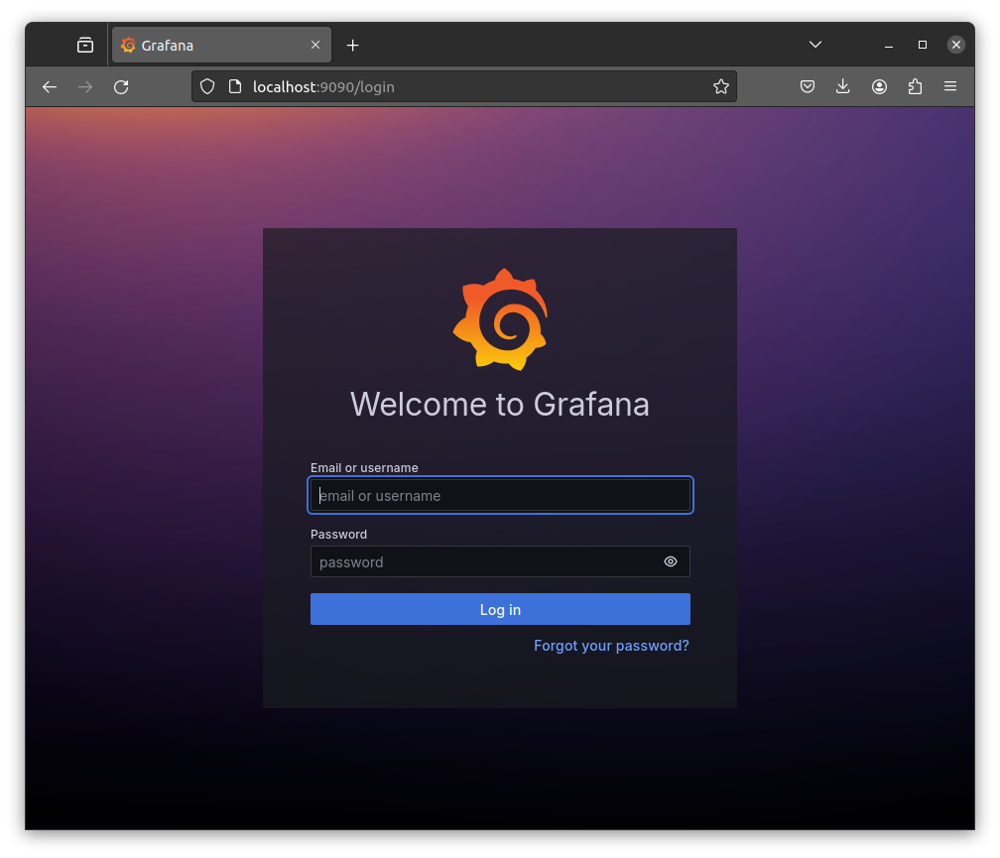
Configurons la source des données dans l’onger Data source, et choisissons InfluxDB comme tyope de source.
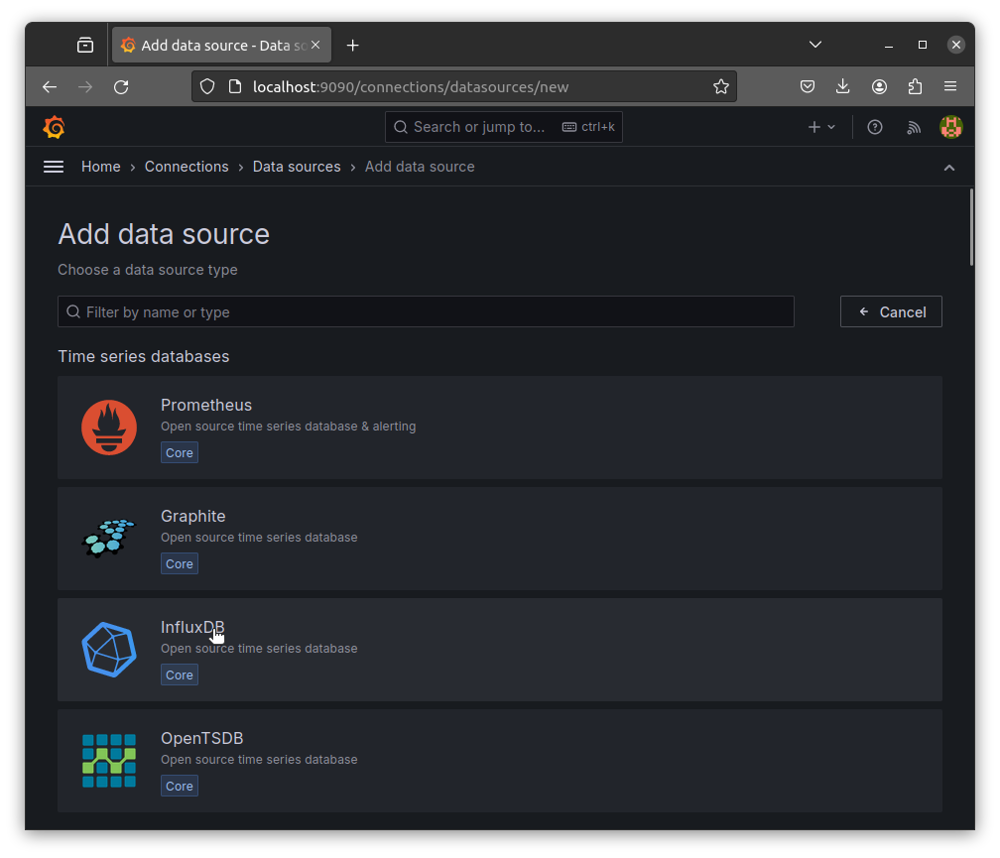
Configurons maintenant la source des données avec le port de InfluxDB, et choisissons FLUX comme langage d’interrogation de la base.
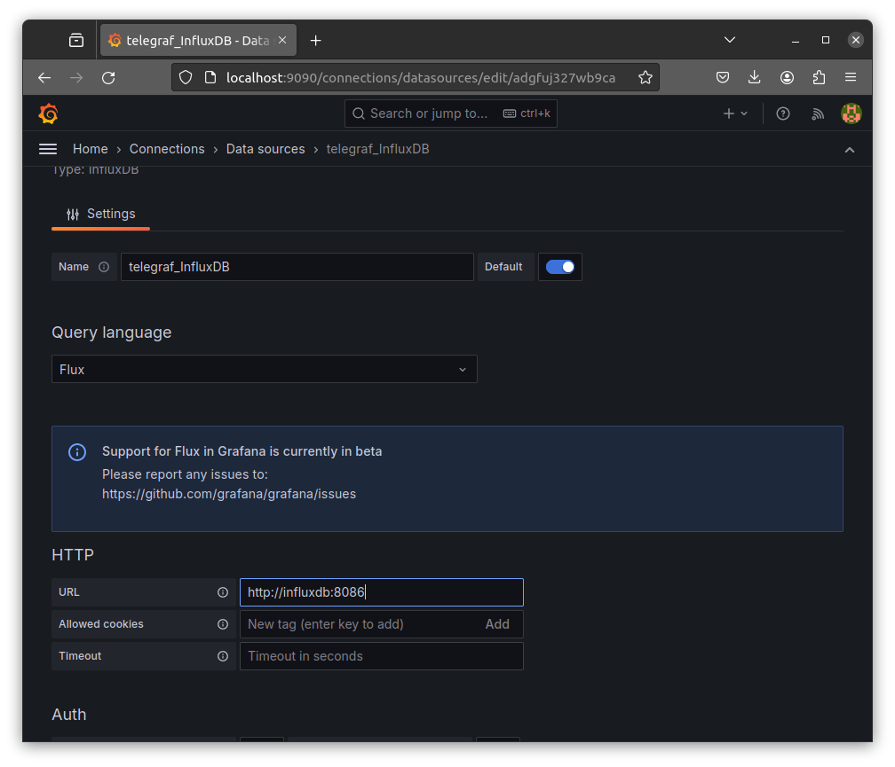
Ajoutons ensuite les identifiants de connexion à la base de données avec ceux choisis dans le fichier .env.
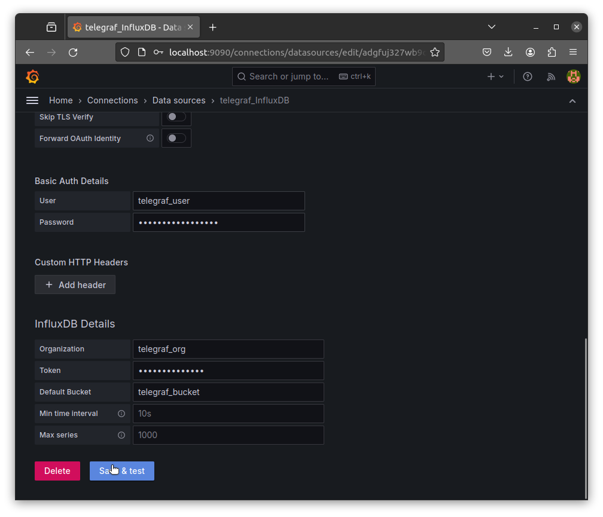
Importons ensuite un dashboard de visualisation des données compatible avec nos configurations. Nous pouvons choisir un dashboard compatible en ligne, mais le dashboard correspondant à l’identifiant 15650 convient à notre exemple.
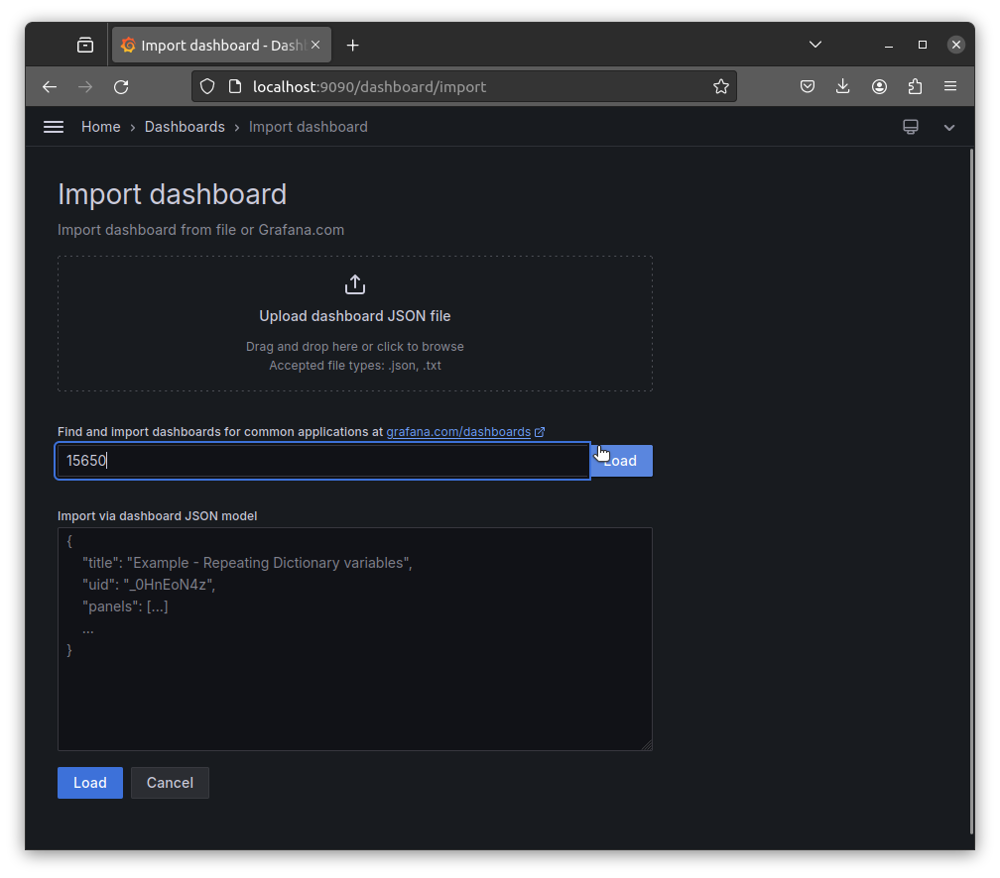
Choisissons la source que nous avons configuré avant d’importer.
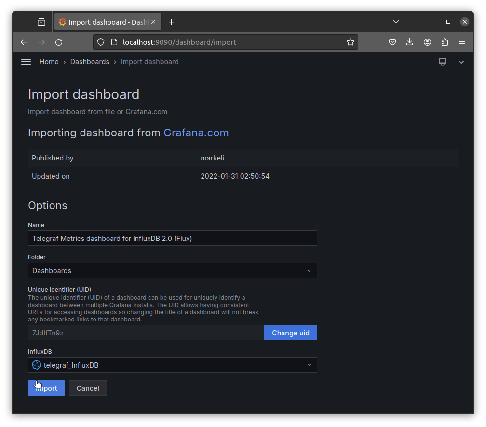
Enfin, choisissons les paramètres du dashboard correspondant à nos données, ici le nom du bucket que nous avons configuré.
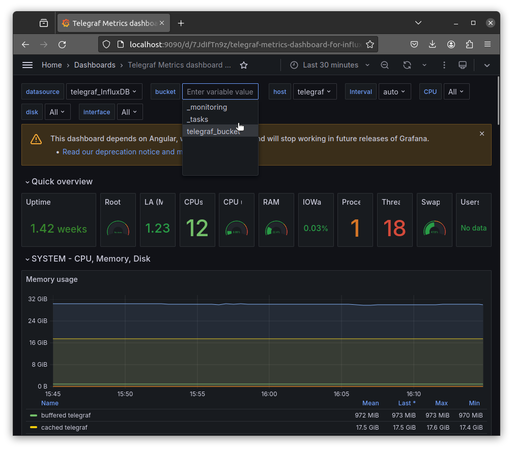
Nous pouvons ensuite modifier plus finement les affichages du dashboard selon nos objectifs, en modifiant leurs paramètres ou les queries associées (en respectant le langage d’écriture Flux).
Une autre possibilité pour importer un dashboard est d’importer le fichier associé au forma .json. Le fichier configuré que nous pouvons importer est disponible sur la machine lst-pa33 au chemin: verlyndem/static/config_suivi/grafana_dashboard_template_07052024.json.
Le dashboard créé lors de notre projet est accessible sur ce lien.
Interrogation de la base
Afin d’interrogée la base de données InfluxDB créée précédemment, nous utilisons un script bash exécute un fichier python présenté en argument, puis interroge la base de donnée afin de récolter les données enregistrée sur la période d’exécution du fichier python.
Ce fichier est disponible sur la machine lst-pa33 au chemin: verlyndem/static/config_suivi/get_metrics.sh.
L’exécution de ce fichier est réalisée selon la commande suivante :
1bash get_metrics.sh -f [python.file] (-p) (-P [pid])
- le drapeau
-fest obligatoire et précède le nom du fichier python à exécuter - le drapeau
-Pest facultatif : si renseigné, les données récoltées seront celles associées au process dont l’identifiant est disponible dans un fichierpython_process.pidsur la période d’exécution du fichier python - le drapeau
-pest facultatif : si renseigné, les données récoltées seront celles associées au process dont l’identifiant est renseigné comme argument dans la commande, - si les drapeaux
-pet-Pne sont pas renseignés, l’ensemble des données de la base sur la période d’exécution du fichier python sera récoltée.
Les données récoltées sont enregistrées dans un fichier metrics_output.
Le fichier de récolte de donnée s’organise ainsi :
1#!/bin/bash
2
3#Récolte des arguments en entrée
4while getopts 'f:p:P:' OPTION; do
5 case "$OPTION" in
6 f)
7 name_file="$OPTARG"
8 ;;
9 P)
10 by_pid=true
11 get_pid=true
12 ;;
13 p)
14 by_pid=true
15 get_pid=false
16 npid="$OPTARG"
17 ;;
18 \?)
19 echo "Invalid option: $OPTARG" 1>&2
20 exit 1
21 ;;
22 esac
23done
24: ${name_file:?Missing -f}
25
26#Relevé du premier temps avant exécution du fichier python
27t1=$(date -u +%Y-%m-%dT%T.%9NZ)
28echo "*************************************************"
29echo "Time start: $t1"
30echo "*************************************************"
31echo "Running python script: $name_file"
32echo "*************************************************"
33
34#Exécution du fichier python
35python3 $name_file
36
37#Relevé du second temps après exécution du fichier python
38t2=$(date -u +%Y-%m-%dT%T.%9NZ)
39
40echo "*************************************************"
41echo "Time stop: $t2"
42echo "*************************************************"
43
44
45if [ "$by_pid" = true ]; then
46 if [ "$get_pid" = true ]; then
47 # Récolte du pid si non renseigné en entrée
48 npid=$(cat python_process.pid)
49 fi
50 echo "Process ID: ${npid}"
51 # Construction de la query sur le process
52 query="data=from(bucket: \"telegraf_bucket\")
53 |> range(start: ${t1}, stop: ${t2})
54 |> filter(fn: (r) => r[\"_measurement\"] == \"procstat\")
55 |> filter(fn: (r) => r[\"pid\"] == \"${npid}\")
56 |> aggregateWindow(every: 1s, fn: mean, createEmpty: false)
57 |> yield(name: \"mean\")"
58else
59 # Construction de la query sur l'ensemble des données
60 query="data=from(bucket: \"telegraf_bucket\")
61 |> range(start: ${t1}, stop: ${t2})
62 |> aggregateWindow(every: 1s, fn: mean, createEmpty: false)
63 |> yield(name: \"mean\")"
64fi
65
66# Ecriture de la query
67echo $query > query
68
69# Copie de la query dans le conteneur d'InfluxDB
70sudo docker cp query influxdb:/query
71
72# Exécution de la query dans le conteneur, et enregistrement de la sortie dans metrics_output
73sudo docker exec -it influxdb sh -c 'influx query -f query -r' > metrics_output
74
75echo "*************************************************"
76echo "File metrics_output created"
77echo "*************************************************"
78head metrics_output
79echo "*************************************************"
Format de sortie dans metrics_output :
1#group,false,false,true,true,false,false,true,true,true,true,true,true
2
3#datatype,string,long,dateTime:RFC3339,dateTime:RFC3339,dateTime:RFC3339,double,string,string,string,string,string,string
4
5#default,mean,,,,,,,,,,,
6
7,result,table,_start,_stop,_time,_value,_field,_measurement,host,pattern,pid,process_name
8
9,,0,2024-03-27T16:15:21.073488201Z,2024-03-27T16:15:57.890192557Z,2024-03-27T16:15:31Z,6.46,cpu_time_system,procstat,telegraf,.*,1601463,python3
10
11,,0,2024-03-27T16:15:21.073488201Z,2024-03-27T16:15:57.890192557Z,2024-03-27T16:15:41Z,6.87,cpu_time_system,procstat,telegraf,.*,1601463,python3
12
13,,0,2024-03-27T16:15:21.073488201Z,2024-03-27T16:15:57.890192557Z,2024-03-27T16:15:51Z,7.46,cpu_time_system,procstat,telegraf,.*,1601463,python3
14
15[...]
Suivre les performances énergétiques
Création du container Docker de l’application Home Assistant (dashboard spécifique optimisé pour Z-Wave):
1sudo docker run -d \
2 --name homeassistant \
3 --privileged \
4 --restart=unless-stopped \
5 -e TZ=Europe/Paris \
6 -v ~/homeassistant:/config \
7 -v /run/dbus:/run/dbus:ro \
8 --network=host \
9 ghcr.io/home-assistant/home-assistant:stable
Création du dossier contenant les configurations de Z-Wave:
1cd homeassistant
2mkdir docker
3mkdir docker/zwave-js
Récupération du nom du Network sur lequel a été installé telegraf :
1sudo docker inspect telegraf -f '{{range $k, $v := .NetworkSettings.Networks}}{{printf "%s\n" $k}}{{end}}'
Récupération du nom du controleur USB :
1dmesg | grep tty
Création du container Docker de l’application Z-Wave JS:
1sudo docker run -d \
2 --network [TELEGRAF_NETWORK] \
3 --restart=always \
4 -p 8091:8091 \
5 -p 3002:3000 \
6 --device=[USB_CONTROLLER] \
7 --name="zwave-js" \
8 -e "TZ=Europe/Paris" \
9 -v ~/homeassistant/docker/zwave-js:/usr/src/app/store zwavejs/zwavejs2mqtt:latest
Configuration de Z-Wave JS sur le port associé:
Pour configurer l’application Z-Wave JS afin de collecter les données de la prise intelligente, rendons nous à l’adresse http://localhost:8091 et dans l’onglet Smart Start.
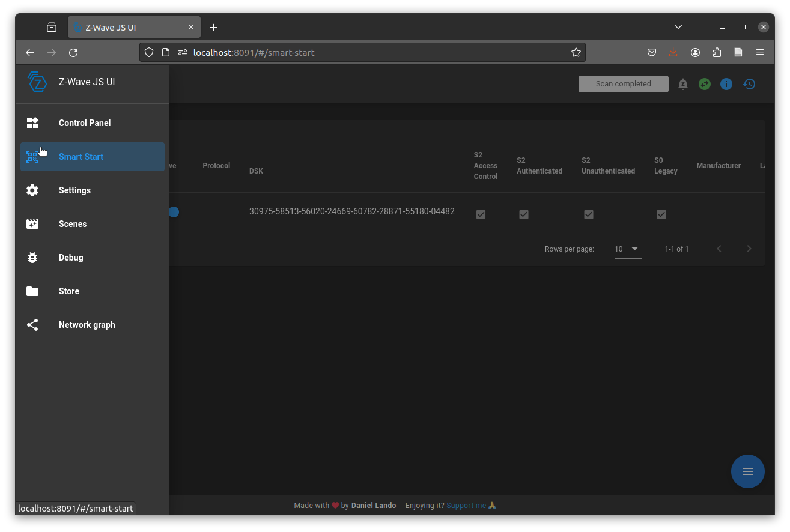
Ajoutons les informations de notre périphérique Smart Switch, via le bouton Add, et ajoutons le code DSK de la prise intelligente (indiqué sur l’emballage) et activons tous les systèmes de sécurité.
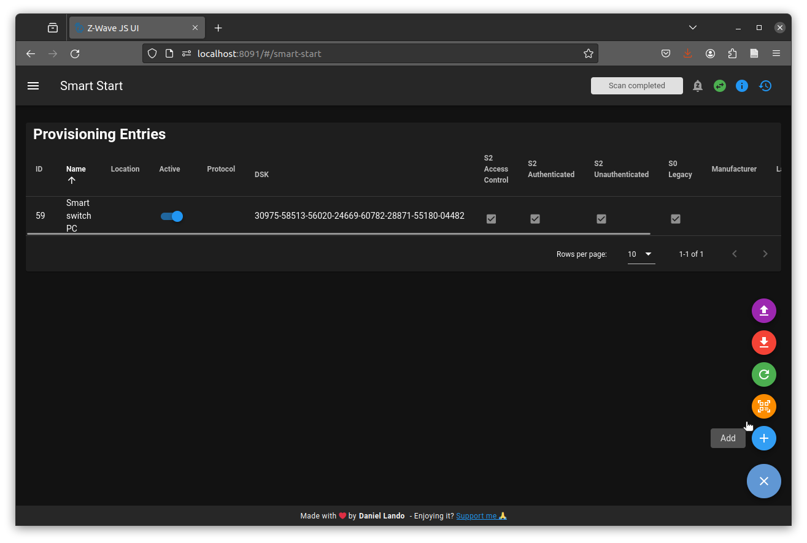 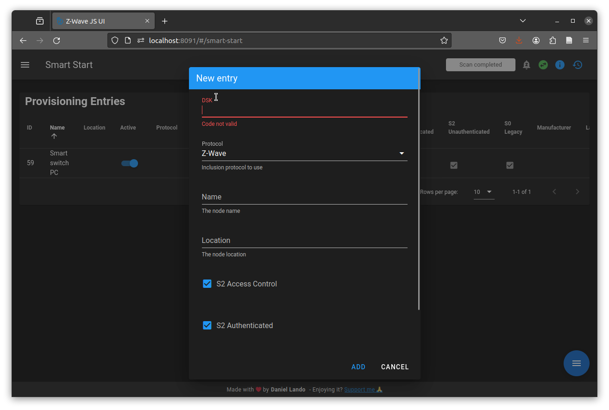
Une fois la prise intelligente connectée, configurons les paramètres de l’application. Dans l’onglet Settings, et la partie Z-Wave, ajoutons le nom du contrôleur USB identifié précedemment avant la création des conteneurs Docker.
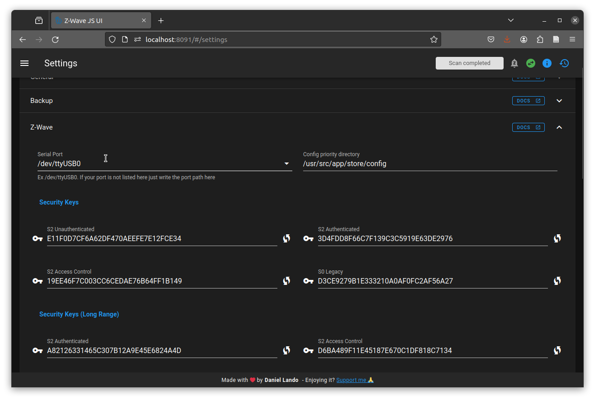
Vérifions que l’enregistrement des statistiques est activé.
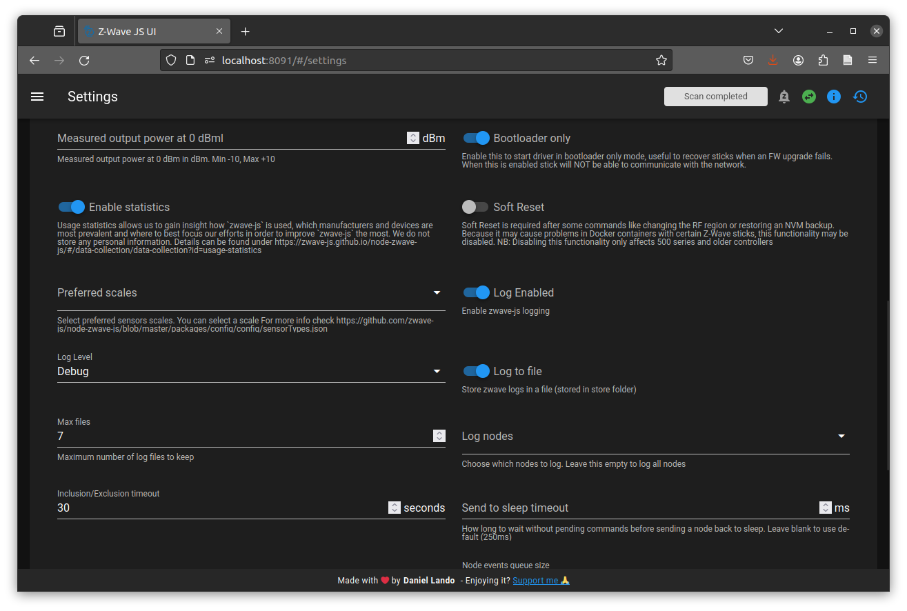
Enfin, dans la partie Home Assistant, ajoutons l’adresse IP du conteneur Z-Wave comme hôte. Celle-ci peut être identifiée via la commande docker sudo docker inspect --format '{{ .NetworkSettings.IPAddress }}' zwave-js dans le terminal. Nous pouvons aussi modifier le port si nous le souhaitons.
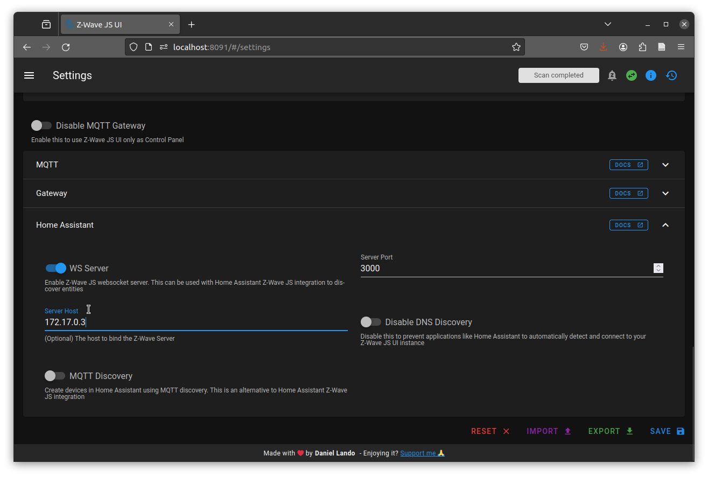
Maintenant que l’application Z-Wave JS est configurée, rendons nous à l’adresse http://localhost:8123 pour configurer l’application Home Assistant. Commençopns par créer un compte en suivant la procédure guidée à l’écran.
Une fois notre compte créé, ajoutons le périphérique d’intérêt.
Dans l’onglet Settings, rendons-nous sur la page Devices & services.
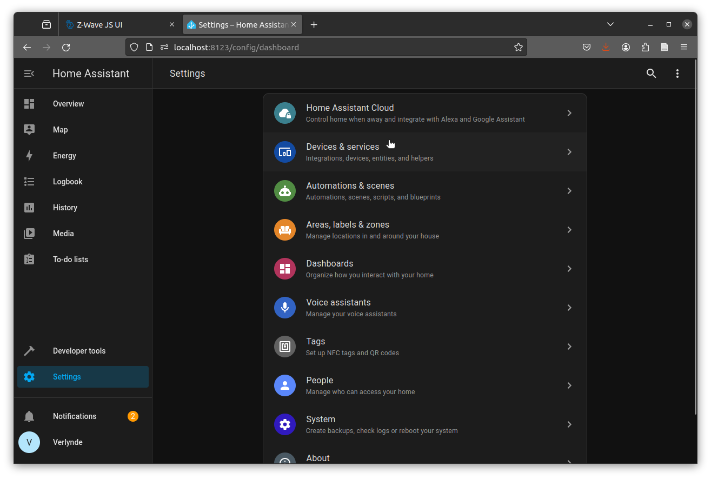
Ajoutons une intégration Z-Wave en nous rendant sur la fonction Add integration et en sélectionnant Z-Wave. Il nous faut alors renseigner l’adresse configurée dans les paramètres de Z-Wave JS sous la forme ws://[IP du conteneur zwave-js]:[port configuré].
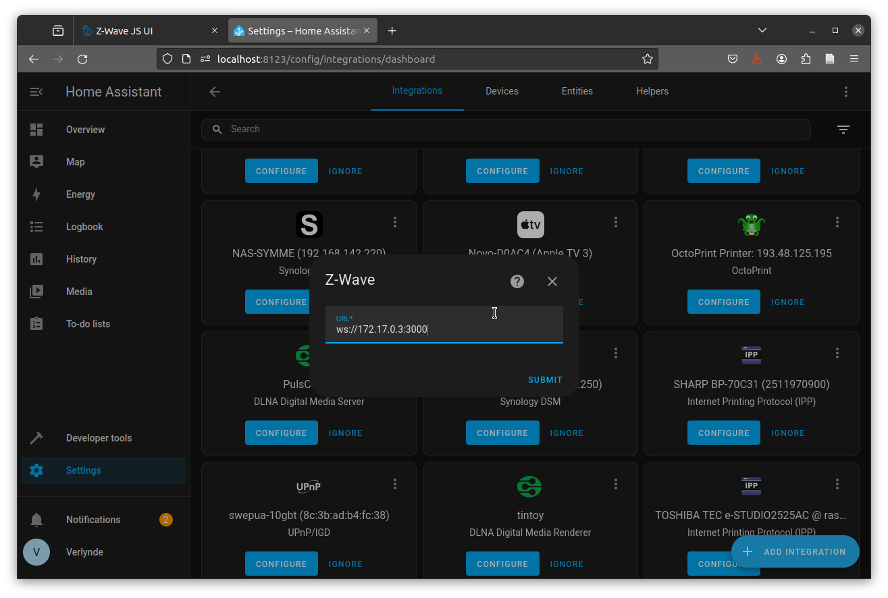
Séléctionnons notre périphérique Smart Switch 7, et nous avons alors bien ajouté notre périphérique. Nous pouvons alors observer les premières acquisitions de données de la prise intelligente, et créer un dashboard si nous le souhaitons. 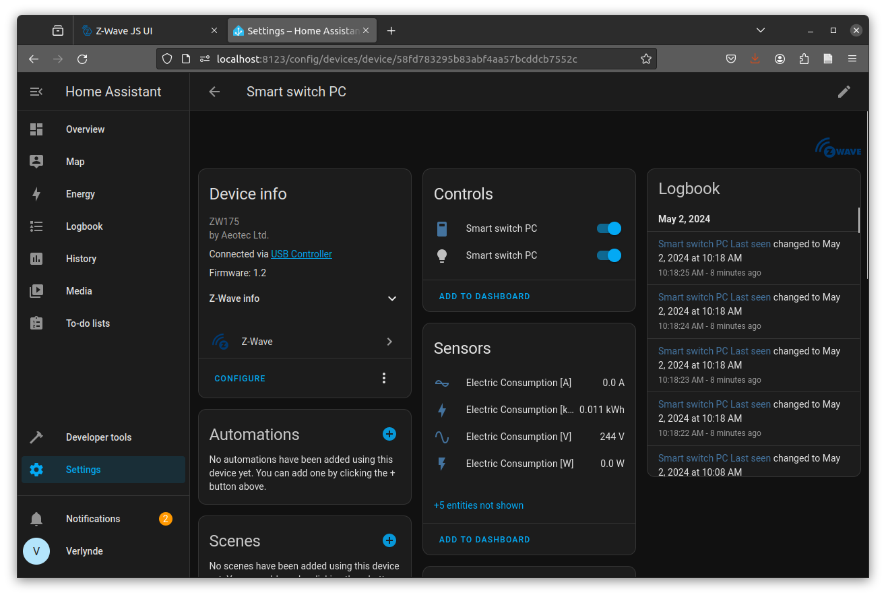
Connection à InfluxDB
1pid_file /var/run/mosquitto.pid
2
3persistence true
4persistence_location /mosquitto/data/
5
6log_dest file /mosquitto/log/mosquitto.log
7log_dest stdout
8
9password_file /mosquitto/config/mosquitto.passwd
10allow_anonymous false
1sudo docker run -d \
2 --network [TELEGRAF_NETWORK] \
3 --restart=always \
4 -p 1883:1883 \
5 --name="mosquitto" \
6 -v ~/homeassistant/docker/mqtt:/mosquitto eclipse-mosquitto:1.6.15
1sudo docker exec -it mosquitto sh
1mosquitto_passwd -c mosquitto/config/mosquitto.passwd [user]
2[password]
1# # Read metrics from MQTT topic(s)
2[[inputs.mqtt_consumer]]
3# ## Broker URLs for the MQTT server or cluster. To connect to multiple
4# ## clusters or standalone servers, use a separate plugin instance.
5# ## example: servers = ["tcp://localhost:1883"]
6# ## servers = ["ssl://localhost:1883"]
7# ## servers = ["ws://localhost:1883"]
8 servers = ["tcp://mosquitto:1883"]
9#
10# ## Topics that will be subscribed to.
11 topics = [
12 "zwave/Smart_switch_PC/50/0/value/65537",
13 "zwave/Smart_switch_PC/50/0/value/66049",
14 "zwave/Smart_switch_PC/50/0/value/66561",
15 "zwave/Smart_switch_PC/50/0/value/66817",
16 ]
17#
18# ## The message topic will be stored in a tag specified by this value. If set
19# ## to the empty string no topic tag will be created.
20# # topic_tag = "topic"
21#
22# ## QoS policy for messages
23# ## 0 = at most once
24# ## 1 = at least once
25# ## 2 = exactly once
26# ##
27# ## When using a QoS of 1 or 2, you should enable persistent_session to allow
28# ## resuming unacknowledged messages.
29# # qos = 0
30#
31# ## Connection timeout for initial connection in seconds
32connection_timeout = "60s"
33#
34# ## Max undelivered messages
35# ## This plugin uses tracking metrics, which ensure messages are read to
36# ## outputs before acknowledging them to the original broker to ensure data
37# ## is not lost. This option sets the maximum messages to read from the
38# ## broker that have not been written by an output.
39# ##
40# ## This value needs to be picked with awareness of the agent's
41# ## metric_batch_size value as well. Setting max undelivered messages too high
42# ## can result in a constant stream of data batches to the output. While
43# ## setting it too low may never flush the broker's messages.
44# # max_undelivered_messages = 1000
45#
46# ## Persistent session disables clearing of the client session on connection.
47# ## In order for this option to work you must also set client_id to identify
48# ## the client. To receive messages that arrived while the client is offline,
49# ## also set the qos option to 1 or 2 and don't forget to also set the QoS when
50# ## publishing. Finally, using a persistent session will use the initial
51# ## connection topics and not subscribe to any new topics even after
52# ## reconnecting or restarting without a change in client ID.
53# # persistent_session = false
54#
55# ## If unset, a random client ID will be generated.
56client_id = "telegraf"
57#
58# ## Username and password to connect MQTT server.
59username="********"
60password="********"
61#
62# ## Optional TLS Config
63# # tls_ca = "/etc/telegraf/ca.pem"
64# # tls_cert = "/etc/telegraf/cert.pem"
65# # tls_key = "/etc/telegraf/key.pem"
66# ## Use TLS but skip chain & host verification
67# # insecure_skip_verify = false
68#
69# ## Client trace messages
70# ## When set to true, and debug mode enabled in the agent settings, the MQTT
71# ## client's messages are included in telegraf logs. These messages are very
72# ## noisey, but essential for debugging issues.
73client_trace = true
74#
75# ## Data format to consume.
76# ## Each data format has its own unique set of configuration options, read
77# ## more about them here:
78# ## https://github.com/influxdata/telegraf/blob/master/docs/DATA_FORMATS_INPUT.md
79 data_format = "json"
80 interval = "60s"
81#
82# ## Enable extracting tag values from MQTT topics
83# ## _ denotes an ignored entry in the topic path
84# # [[inputs.mqtt_consumer.topic_parsing]]
85# # topic = ""
86# # measurement = ""
87# # tags = ""
88# # fields = ""
89# ## Value supported is int, float, unit
90# # [[inputs.mqtt_consumer.topic.types]]
91# # key = type
Erreurs possibles
Dans le cas d’un arrêt complet du serveur, les adresses IP des conteneurs Docker peuvent alors être changées. Ceci ne devrait pas poser de problème pour l’ensemble du pipeline, excepté pour le software HomeAssistant. Pour reconnecter HomeAssistant :
-
Récupérer l’adresse IP du conteneur de ZWave-JS UI via la commande
sudo docker inspect --format '{{ .NetworkSettings.Networks.tig_default.IPAddress }}' zwave-js -
Réeffectuer la connection à HomeAssistant avec cette adresse IP comme présenté précédemment
Dans le cas où la prise connectée s’est éteinte, et que l’intervalle d’envoi de données à été modifié :
-
Se rendre sur l’interface de ZWave-JS UI
http://localhost:8091/sur le panneau de contrôle (Control panel) -
Sur le noeud associé à la prise connectée, dans l’onglet Values, ouvrir la rubrique Configuration v1
-
Modifier la valeur du paramètre Automatic Reporting Interval (Attention, la valeur minimale est de 30 secondes)